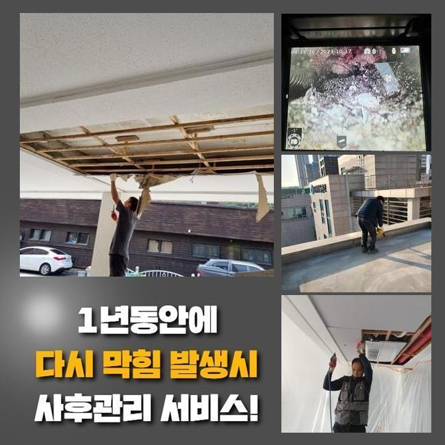
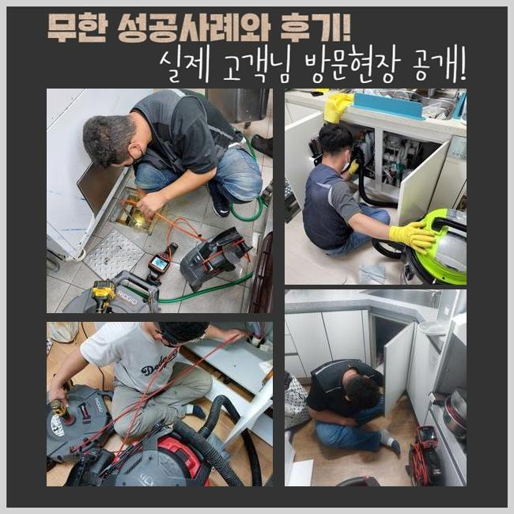
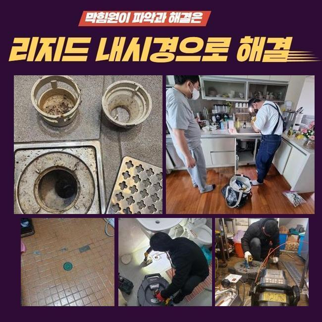
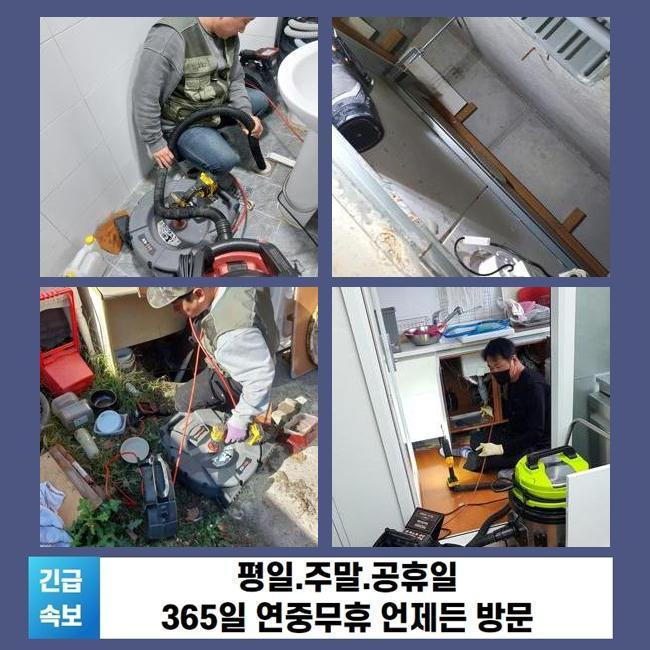
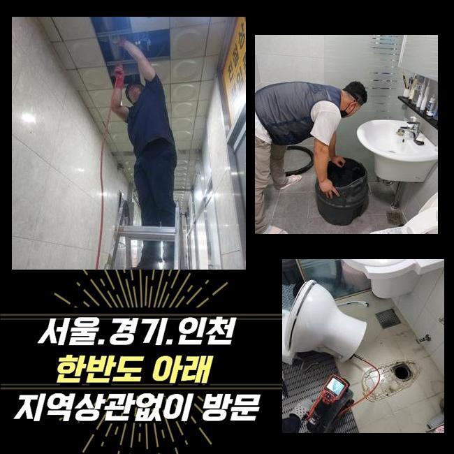
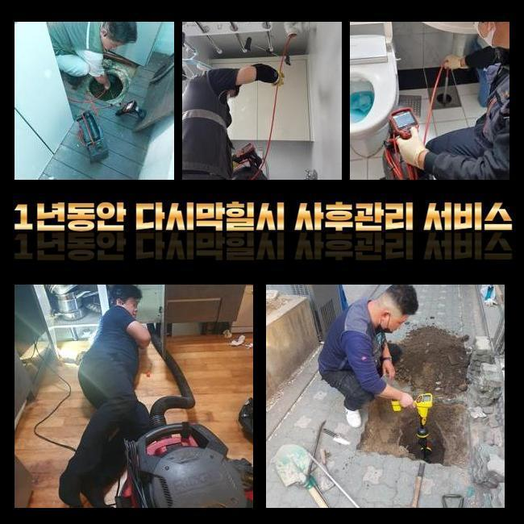
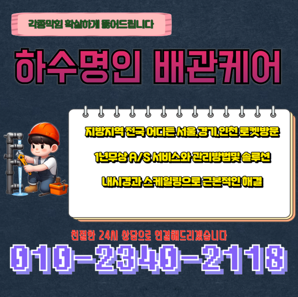

🏠 용인 역북동욕실뚫음 포곡읍 악취차단 통수전문
용인 역북동 싱크대막힘 전문 시공 후기

📋 작업 개요
- 위치: 용인 역북동, 역북동, 용인
- 서비스 유형: 싱크대막힘, 하수구막힘, 배관막힘, 역류해결, 뚫는업체, 배관청소, 악취차단
- 작업 일시: 2025. 1. 18. 21:00
- 업체명: 하수구수사대 (010-5615-2118)
🔍 문제 상황
용인 역북동욕실뚫음 포곡읍 악취차단 통수전문
얼마전 사무공간의 팬트리에서 발생된 배수장애를 바로잡은 예시를 설명드리겠습니다
이해하기 쉽고 실용적인 내용들이 있으니 같이 살펴보아요
오피스라는 스팟에서 시작된 일이다 보니 자가적으로 뚫기위한 흔적들이 남아있었습니다
전문가들은 수리계획들을 어떤수순으로 이행하는지 또한 하수관을 지켜내는 방법들도 어렵지않게 설명할게요!
고객께선 이용할때 조리를 위한 목적이 아니였어서 배관막힘이 생기게될 줄 몰랐다고 말해주셨죠
사무공간은 식자재들을 안쓰는 곳이기에 신경쓰고 예방책 실시가 간과된 사례가 대다수에요
저희의 전문가들은 장치를 준비시켜 달려가보았습니다 현장도달 후 배수관을 관찰했습니다
이곳저곳 확인하니 고여있는 문제들은 관찰되지않았지만 느린 속도로 내려가고 있었어요
배수가 제대로 안되면 예고없이 고이게되고 역류해버리는 증상들이 생겨날 확률이 다분해요

🔎 원인 분석
💡 전문가 진단: 정밀 진단 장비를 사용하여 슬러지의 고착 여부를 판명하고 타격/세척 작업을 실시했습니다.
그렇기때문에 석션기계로 일컫는 전문기계를 꺼내 떠다니는 오수들을 제거해주었습니다
석션도구는 내시경을 이용한 진단에 앞서 선명한 송출을 위해서 이용되고 찌꺼기와 같은 이물들을 청소해줄때 효과좋은 성능을 보입니다
석션기기에 하수들이 담겨있었지만 그럼에도 답답하게 내려갔어요
석션기 사용 이후 절차로는 내시경도구로 깊숙한 부분도 확인했는데요
내시경기기의 줄을 삽입하니 슬러지들이 자리하고 있어 통로길이 협소하게 되었는데요
요리를 할 일이 없는 장소인데 어떤이유로 찌꺼기들이 축적되었나 의문이 들 수 있겠으나 다중 이용 시설은 정기적인 청소들이 이뤄지지않는 경우들이 다수입니다
우선은 과자나 커피에서 나오는 부산물 오일류들이 흡착되어 고착물을 만들어냅니다
내시경도구로 주방라인을 관찰하며 샤프트장치로 흡착물들을 타격하며 점진적으로 하수관을 청소해주니 공간들이 만들어지며 통로들이 넓어졌어요
기름의 잔재들은 관찰할 때 빨간색을 띄게되어 기름성분이 모조리 사라진다면 화면상으로도 탈바꿈되는것을 관찰할 수 있습니다
샤프트운용을 진행시켰는데도 불구하고 물이 그럼에도 제대로 안빠지는 상태였어요
그렇기때문에 대량의 물들을 일시에 흐르게했더니 특정 구간에서 고이며 통수장애가 나타나는 결함이 잔존해있는 상태였습니다

🔧 작업 과정
오수가 고인 상태라는건 놓치게된 요소들이 남아있단 시그널이에요
잔해축적과 더불어 놓치게된 요소들이 존재한다는 걸 보여주는것이기에 외측라인까지 들여다볼 필요성들이 분명했습니다
저희전문진은 계속적인 싱크대배수 정체의 이유를 특정시키고자 내시경케이블을 수직배관 끝까지 투입시켰습니다
마침내 발견하게 된 건 배수라인의 모서리쪽이 하단에 매립되어진 형상이 아니라 외측으로 노출되서 설치되어진 사실이었는데요
실내부터 내시경으로 확인해주는게 힘들어 바깥에서부터 역순으로 투입시킬 수 있게 타공작업을 통해 뚫어주고 구멍을 통하여 내시경 내시경 라인을 밀어넣었습니다
내시경 선을 넣으니 다시금 좁혀진 배수길을 발견했죠
탕비실라인에서는 관로들이 붙어있던 모습이 아니였고 다른 배수관이 하단부로 빠지는 구조였죠
그 라인을 따라가보니 세면대로 올라가는길에 폐기물이 하수도를 막아선 모습이였습니다
주방쪽의 하수도가 아니였고 뜻밖의 장소에 형체를 알 수 없는 것이 존재하여 발견하기까지 오래걸렸으나 결국 오랫동안 이어진 막혀버리는 문제들의 주된 까닭을 찾았습니다
수회에 걸쳐 위치들을 확인하고 점검해야하는 지점의 pvc 하수도를 자른 뒤에 잔해를 배출해냈는데요
제거시키니 각진 고무같은것이였는데 어떻게 사용되었는지 파악이 안됐지만 사이즈가 컸으며 배수관에 놓아진 상태면 배수가 불가한 물체였어요
주방의 하수도와 통수오류를 발생하게 만드는 플라스틱까지 없애주는 절차를 진행했더니 물빠짐이 복구되었고 시정이 끝나게되었어요
최종적으로 고객분은 냄새나는 것에도 물으셨어요 작업하면서 알 수 있었는데 냄새들도 생기게 된것도 확인했죠
트랩부분에 균열들이 존재했어요 배수관부터 마무리해드리고 새로운 트랩부품으로 교체도 오차없이 해드렸습니다
최종적인 검수를 실시해보고자 탕비실쪽으로 가 싱크대쪽에 물들을 채워서 내려보니 처음과는 비교도 안될정도로 답답함 없이 흐르게되었어요
오늘의 통수가 안되는 트러블도 말끔하게 바로 잡혔어요


✅ 작업 완료
다행으로 결국엔 문제의 연유를 쫓아 결국 막힌 까닭을 찾게되었고 시설물 이용도 가능하게되었어요
위같이 고객께서 추후에도 고생하시지않게 모든 과정을 완료하게되었습니다
이용해주실 때 수채구멍으로 기름성분과 잔해들이 빠지지않도록 유의해주셔야하고 청소작업도 때에 맞춰 진행해주시면 좋습니다
저희전문진은 재발하지않는 수리에 몰두하고 있어요 이에 작업 중에 작업들을 끝내고 작업한 위치에서 또 같은 증세가 야기되면 금방 달려가 as까지 제공해드려요
배수정체로 인해 전문가 호출을 생각하고 있으시면 저희전문진에게 연락하시는건 어떠십니까?




⚠️ 주방 싱크대 배관 막힘 예방 수칙
- ✅ 기름기가 묻은 식기나 프라이팬은 설거지 전 키친타올로 반드시 기름때를 닦아내세요.
- ✅ 주기적으로 싱크대 개수대에 뜨거운 물을 가득 받아 한 번에 내려 배관 내부 기름을 씻어내세요.
- ✅ 배수구 거름망을 미세한 필터로 사용하시고 음식물 찌꺼기가 틈으로 새어 들지 않게 관리하세요.
- ✅ 베이킹소다와 식초를 뜨거운 물과 함께 일주일에 한 번씩 부어주면 배관 살균과 막힘 예방에 좋습니다.
💡 핵심 정리
- 확실한 장비 작업(내시경 점검 및 샤프트 스케일링)으로 원인을 뿌리 뽑습니다.
- 작업 후 1년 이내에 동일한 부위 재발 시 100% 무상 A/S 서비스를 보장합니다.
- 서울 · 경기 · 인천 전 지역에 24시간 언제든 긴급 출동할 수 있도록 항시 대기 중입니다.
❓ 자주 묻는 질문 (FAQ)
🚨 용인 역북동 싱크대막힘 문제로 고민이신가요?
정확한 원인 진단과 확실한 시공으로 재발 없는 해결을 약속드립니다.
24시간 긴급 출동 | 서울 · 경기 · 인천 전지역 | 1년 내 재발 시 무상 A/S